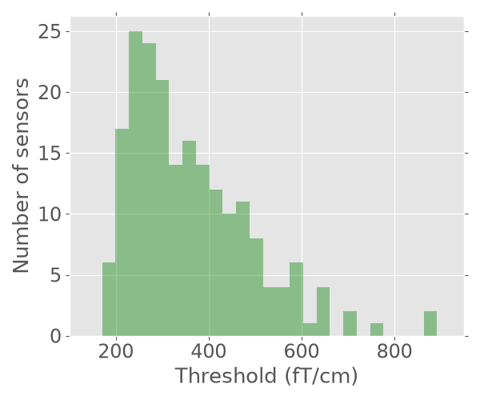

Note
Go to the end to download the full example code.
Plot channel-level thresholds#
This example demonstrates how to use autoreject to find
channel-wise thresholds.
# Author: Mainak Jas <mainak.jas@telecom-paristech.fr>
# License: BSD-3-Clause
Let us first load the raw data using mne.io.read_raw_fif().
import mne
from mne import io
from mne.datasets import sample
data_path = sample.data_path()
meg_path = data_path / 'MEG' / 'sample'
raw_fname = meg_path / 'sample_audvis_filt-0-40_raw.fif'
raw = io.read_raw_fif(raw_fname, preload=True)
Opening raw data file /home/circleci/mne_data/MNE-sample-data/MEG/sample/sample_audvis_filt-0-40_raw.fif...
Read a total of 4 projection items:
PCA-v1 (1 x 102) idle
PCA-v2 (1 x 102) idle
PCA-v3 (1 x 102) idle
Average EEG reference (1 x 60) idle
Range : 6450 ... 48149 = 42.956 ... 320.665 secs
Ready.
Reading 0 ... 41699 = 0.000 ... 277.709 secs...
We can extract the events (or triggers) for epoching our signal.
event_fname = meg_path / 'sample_audvis_filt-0-40_raw-eve.fif'
event_id = {'Auditory/Left': 1}
tmin, tmax = -0.2, 0.5
events = mne.read_events(event_fname)
Now that we have the events, we can extract the trials for the selection
of channels defined by picks.
epochs = mne.Epochs(raw, events, event_id, tmin, tmax,
baseline=(None, 0),
reject=None, verbose=False, preload=True)
picks = mne.pick_types(epochs.info, meg='grad', eeg=False, stim=False,
eog=False, exclude='bads')
Now, we compute the channel-level thresholds using
autoreject.compute_thresholds(). The method parameter will determine
how we will search for thresholds over a range of potential candidates.
import numpy as np # noqa
from autoreject import compute_thresholds # noqa
# Get a dictionary of rejection thresholds
threshes = compute_thresholds(epochs, picks=picks, method='random_search',
random_state=42, augment=False,
verbose=True)
/home/circleci/project/autoreject/utils.py:73: UserWarning: 2 channels are marked as bad. These will be ignored. If you want them to be considered by autoreject please remove them from epochs.info["bads"].
warnings.warn(
0%| | Computing thresholds ... : 0/203 [00:00<?, ?it/s]
0%| | Computing thresholds ... : 1/203 [00:00<00:19, 10.41it/s]
1%| | Computing thresholds ... : 2/203 [00:00<00:17, 11.30it/s]
1%|▏ | Computing thresholds ... : 3/203 [00:00<00:17, 11.64it/s]
2%|▏ | Computing thresholds ... : 4/203 [00:00<00:16, 11.80it/s]
2%|▏ | Computing thresholds ... : 5/203 [00:00<00:16, 11.93it/s]
3%|▎ | Computing thresholds ... : 6/203 [00:00<00:16, 12.02it/s]
3%|▎ | Computing thresholds ... : 7/203 [00:00<00:16, 12.07it/s]
4%|▍ | Computing thresholds ... : 8/203 [00:00<00:16, 12.12it/s]
4%|▍ | Computing thresholds ... : 9/203 [00:00<00:15, 12.16it/s]
5%|▍ | Computing thresholds ... : 10/203 [00:00<00:15, 12.19it/s]
5%|▌ | Computing thresholds ... : 11/203 [00:00<00:15, 12.22it/s]
6%|▌ | Computing thresholds ... : 12/203 [00:00<00:15, 12.23it/s]
6%|▋ | Computing thresholds ... : 13/203 [00:01<00:15, 12.25it/s]
7%|▋ | Computing thresholds ... : 14/203 [00:01<00:15, 12.26it/s]
7%|▋ | Computing thresholds ... : 15/203 [00:01<00:15, 12.28it/s]
8%|▊ | Computing thresholds ... : 16/203 [00:01<00:15, 12.29it/s]
8%|▊ | Computing thresholds ... : 17/203 [00:01<00:15, 12.30it/s]
9%|▉ | Computing thresholds ... : 18/203 [00:01<00:15, 12.31it/s]
9%|▉ | Computing thresholds ... : 19/203 [00:01<00:14, 12.32it/s]
10%|▉ | Computing thresholds ... : 20/203 [00:01<00:14, 12.32it/s]
10%|█ | Computing thresholds ... : 21/203 [00:01<00:14, 12.32it/s]
11%|█ | Computing thresholds ... : 22/203 [00:01<00:14, 12.32it/s]
11%|█▏ | Computing thresholds ... : 23/203 [00:01<00:14, 12.32it/s]
12%|█▏ | Computing thresholds ... : 24/203 [00:01<00:14, 12.33it/s]
12%|█▏ | Computing thresholds ... : 25/203 [00:02<00:14, 12.33it/s]
13%|█▎ | Computing thresholds ... : 26/203 [00:02<00:14, 12.33it/s]
13%|█▎ | Computing thresholds ... : 27/203 [00:02<00:14, 12.34it/s]
14%|█▍ | Computing thresholds ... : 28/203 [00:02<00:14, 12.34it/s]
14%|█▍ | Computing thresholds ... : 29/203 [00:02<00:14, 12.34it/s]
15%|█▍ | Computing thresholds ... : 30/203 [00:02<00:14, 12.35it/s]
15%|█▌ | Computing thresholds ... : 31/203 [00:02<00:13, 12.36it/s]
16%|█▌ | Computing thresholds ... : 32/203 [00:02<00:13, 12.36it/s]
16%|█▋ | Computing thresholds ... : 33/203 [00:02<00:13, 12.37it/s]
17%|█▋ | Computing thresholds ... : 34/203 [00:02<00:13, 12.36it/s]
17%|█▋ | Computing thresholds ... : 35/203 [00:02<00:13, 12.36it/s]
18%|█▊ | Computing thresholds ... : 36/203 [00:02<00:13, 12.36it/s]
18%|█▊ | Computing thresholds ... : 37/203 [00:03<00:13, 12.36it/s]
19%|█▊ | Computing thresholds ... : 38/203 [00:03<00:13, 12.36it/s]
19%|█▉ | Computing thresholds ... : 39/203 [00:03<00:13, 12.36it/s]
20%|█▉ | Computing thresholds ... : 40/203 [00:03<00:13, 12.36it/s]
20%|██ | Computing thresholds ... : 41/203 [00:03<00:13, 12.36it/s]
21%|██ | Computing thresholds ... : 42/203 [00:03<00:13, 12.37it/s]
21%|██ | Computing thresholds ... : 43/203 [00:03<00:12, 12.37it/s]
22%|██▏ | Computing thresholds ... : 44/203 [00:03<00:12, 12.37it/s]
22%|██▏ | Computing thresholds ... : 45/203 [00:03<00:12, 12.37it/s]
23%|██▎ | Computing thresholds ... : 46/203 [00:03<00:12, 12.36it/s]
23%|██▎ | Computing thresholds ... : 47/203 [00:03<00:12, 12.36it/s]
24%|██▎ | Computing thresholds ... : 48/203 [00:03<00:12, 12.36it/s]
24%|██▍ | Computing thresholds ... : 49/203 [00:03<00:12, 12.36it/s]
25%|██▍ | Computing thresholds ... : 50/203 [00:04<00:12, 12.37it/s]
25%|██▌ | Computing thresholds ... : 51/203 [00:04<00:12, 12.37it/s]
26%|██▌ | Computing thresholds ... : 52/203 [00:04<00:12, 12.37it/s]
26%|██▌ | Computing thresholds ... : 53/203 [00:04<00:12, 12.37it/s]
27%|██▋ | Computing thresholds ... : 54/203 [00:04<00:12, 12.37it/s]
27%|██▋ | Computing thresholds ... : 55/203 [00:04<00:11, 12.36it/s]
28%|██▊ | Computing thresholds ... : 56/203 [00:04<00:11, 12.36it/s]
28%|██▊ | Computing thresholds ... : 57/203 [00:04<00:11, 12.36it/s]
29%|██▊ | Computing thresholds ... : 58/203 [00:04<00:11, 12.36it/s]
29%|██▉ | Computing thresholds ... : 59/203 [00:04<00:11, 12.36it/s]
30%|██▉ | Computing thresholds ... : 60/203 [00:04<00:11, 12.36it/s]
30%|███ | Computing thresholds ... : 61/203 [00:04<00:11, 12.35it/s]
31%|███ | Computing thresholds ... : 62/203 [00:05<00:11, 12.36it/s]
31%|███ | Computing thresholds ... : 63/203 [00:05<00:11, 12.36it/s]
32%|███▏ | Computing thresholds ... : 64/203 [00:05<00:11, 12.36it/s]
32%|███▏ | Computing thresholds ... : 65/203 [00:05<00:11, 12.35it/s]
33%|███▎ | Computing thresholds ... : 66/203 [00:05<00:11, 12.36it/s]
33%|███▎ | Computing thresholds ... : 67/203 [00:05<00:11, 12.36it/s]
33%|███▎ | Computing thresholds ... : 68/203 [00:05<00:10, 12.35it/s]
34%|███▍ | Computing thresholds ... : 69/203 [00:05<00:10, 12.35it/s]
34%|███▍ | Computing thresholds ... : 70/203 [00:05<00:10, 12.35it/s]
35%|███▍ | Computing thresholds ... : 71/203 [00:05<00:10, 12.35it/s]
35%|███▌ | Computing thresholds ... : 72/203 [00:05<00:10, 12.35it/s]
36%|███▌ | Computing thresholds ... : 73/203 [00:05<00:10, 12.35it/s]
36%|███▋ | Computing thresholds ... : 74/203 [00:05<00:10, 12.36it/s]
37%|███▋ | Computing thresholds ... : 75/203 [00:06<00:10, 12.36it/s]
37%|███▋ | Computing thresholds ... : 76/203 [00:06<00:10, 12.36it/s]
38%|███▊ | Computing thresholds ... : 77/203 [00:06<00:10, 12.36it/s]
38%|███▊ | Computing thresholds ... : 78/203 [00:06<00:10, 12.36it/s]
39%|███▉ | Computing thresholds ... : 79/203 [00:06<00:10, 12.36it/s]
39%|███▉ | Computing thresholds ... : 80/203 [00:06<00:09, 12.36it/s]
40%|███▉ | Computing thresholds ... : 81/203 [00:06<00:09, 12.37it/s]
40%|████ | Computing thresholds ... : 82/203 [00:06<00:09, 12.37it/s]
41%|████ | Computing thresholds ... : 83/203 [00:06<00:09, 12.37it/s]
41%|████▏ | Computing thresholds ... : 84/203 [00:06<00:09, 12.37it/s]
42%|████▏ | Computing thresholds ... : 85/203 [00:06<00:09, 12.38it/s]
42%|████▏ | Computing thresholds ... : 86/203 [00:06<00:09, 12.38it/s]
43%|████▎ | Computing thresholds ... : 87/203 [00:07<00:09, 12.38it/s]
43%|████▎ | Computing thresholds ... : 88/203 [00:07<00:09, 12.38it/s]
44%|████▍ | Computing thresholds ... : 89/203 [00:07<00:09, 12.38it/s]
44%|████▍ | Computing thresholds ... : 90/203 [00:07<00:09, 12.38it/s]
45%|████▍ | Computing thresholds ... : 91/203 [00:07<00:09, 12.38it/s]
45%|████▌ | Computing thresholds ... : 92/203 [00:07<00:08, 12.38it/s]
46%|████▌ | Computing thresholds ... : 93/203 [00:07<00:08, 12.38it/s]
46%|████▋ | Computing thresholds ... : 94/203 [00:07<00:08, 12.37it/s]
47%|████▋ | Computing thresholds ... : 95/203 [00:07<00:08, 12.37it/s]
47%|████▋ | Computing thresholds ... : 96/203 [00:07<00:08, 12.37it/s]
48%|████▊ | Computing thresholds ... : 97/203 [00:07<00:08, 12.37it/s]
48%|████▊ | Computing thresholds ... : 98/203 [00:07<00:08, 12.36it/s]
49%|████▉ | Computing thresholds ... : 99/203 [00:08<00:08, 12.35it/s]
49%|████▉ | Computing thresholds ... : 100/203 [00:08<00:08, 12.35it/s]
50%|████▉ | Computing thresholds ... : 101/203 [00:08<00:08, 12.35it/s]
50%|█████ | Computing thresholds ... : 102/203 [00:08<00:08, 12.35it/s]
51%|█████ | Computing thresholds ... : 103/203 [00:08<00:08, 12.35it/s]
51%|█████ | Computing thresholds ... : 104/203 [00:08<00:08, 12.34it/s]
52%|█████▏ | Computing thresholds ... : 105/203 [00:08<00:07, 12.34it/s]
52%|█████▏ | Computing thresholds ... : 106/203 [00:08<00:07, 12.34it/s]
53%|█████▎ | Computing thresholds ... : 107/203 [00:08<00:07, 12.34it/s]
53%|█████▎ | Computing thresholds ... : 108/203 [00:08<00:07, 12.34it/s]
54%|█████▎ | Computing thresholds ... : 109/203 [00:08<00:07, 12.34it/s]
54%|█████▍ | Computing thresholds ... : 110/203 [00:08<00:07, 12.34it/s]
55%|█████▍ | Computing thresholds ... : 111/203 [00:08<00:07, 12.34it/s]
55%|█████▌ | Computing thresholds ... : 112/203 [00:09<00:07, 12.34it/s]
56%|█████▌ | Computing thresholds ... : 113/203 [00:09<00:07, 12.35it/s]
56%|█████▌ | Computing thresholds ... : 114/203 [00:09<00:07, 12.35it/s]
57%|█████▋ | Computing thresholds ... : 115/203 [00:09<00:07, 12.29it/s]
57%|█████▋ | Computing thresholds ... : 116/203 [00:09<00:07, 12.30it/s]
58%|█████▊ | Computing thresholds ... : 117/203 [00:09<00:06, 12.30it/s]
58%|█████▊ | Computing thresholds ... : 118/203 [00:09<00:06, 12.30it/s]
59%|█████▊ | Computing thresholds ... : 119/203 [00:09<00:06, 12.31it/s]
59%|█████▉ | Computing thresholds ... : 120/203 [00:09<00:06, 12.31it/s]
60%|█████▉ | Computing thresholds ... : 121/203 [00:09<00:06, 12.31it/s]
60%|██████ | Computing thresholds ... : 122/203 [00:09<00:06, 12.32it/s]
61%|██████ | Computing thresholds ... : 123/203 [00:09<00:06, 12.32it/s]
61%|██████ | Computing thresholds ... : 124/203 [00:10<00:06, 12.31it/s]
62%|██████▏ | Computing thresholds ... : 125/203 [00:10<00:06, 12.32it/s]
62%|██████▏ | Computing thresholds ... : 126/203 [00:10<00:06, 12.32it/s]
63%|██████▎ | Computing thresholds ... : 127/203 [00:10<00:06, 12.33it/s]
63%|██████▎ | Computing thresholds ... : 128/203 [00:10<00:06, 12.33it/s]
64%|██████▎ | Computing thresholds ... : 129/203 [00:10<00:06, 12.33it/s]
64%|██████▍ | Computing thresholds ... : 130/203 [00:10<00:05, 12.33it/s]
65%|██████▍ | Computing thresholds ... : 131/203 [00:10<00:05, 12.33it/s]
65%|██████▌ | Computing thresholds ... : 132/203 [00:10<00:05, 12.33it/s]
66%|██████▌ | Computing thresholds ... : 133/203 [00:10<00:05, 12.33it/s]
66%|██████▌ | Computing thresholds ... : 134/203 [00:10<00:05, 12.33it/s]
67%|██████▋ | Computing thresholds ... : 135/203 [00:10<00:05, 12.33it/s]
67%|██████▋ | Computing thresholds ... : 136/203 [00:11<00:05, 12.33it/s]
67%|██████▋ | Computing thresholds ... : 137/203 [00:11<00:05, 12.34it/s]
68%|██████▊ | Computing thresholds ... : 138/203 [00:11<00:05, 12.34it/s]
68%|██████▊ | Computing thresholds ... : 139/203 [00:11<00:05, 12.35it/s]
69%|██████▉ | Computing thresholds ... : 140/203 [00:11<00:05, 12.35it/s]
69%|██████▉ | Computing thresholds ... : 141/203 [00:11<00:05, 12.35it/s]
70%|██████▉ | Computing thresholds ... : 142/203 [00:11<00:04, 12.35it/s]
70%|███████ | Computing thresholds ... : 143/203 [00:11<00:04, 12.35it/s]
71%|███████ | Computing thresholds ... : 144/203 [00:11<00:04, 12.35it/s]
71%|███████▏ | Computing thresholds ... : 145/203 [00:11<00:04, 12.35it/s]
72%|███████▏ | Computing thresholds ... : 146/203 [00:11<00:04, 12.34it/s]
72%|███████▏ | Computing thresholds ... : 147/203 [00:11<00:04, 12.34it/s]
73%|███████▎ | Computing thresholds ... : 148/203 [00:11<00:04, 12.34it/s]
73%|███████▎ | Computing thresholds ... : 149/203 [00:12<00:04, 12.34it/s]
74%|███████▍ | Computing thresholds ... : 150/203 [00:12<00:04, 12.34it/s]
74%|███████▍ | Computing thresholds ... : 151/203 [00:12<00:04, 12.34it/s]
75%|███████▍ | Computing thresholds ... : 152/203 [00:12<00:04, 12.34it/s]
75%|███████▌ | Computing thresholds ... : 153/203 [00:12<00:04, 12.34it/s]
76%|███████▌ | Computing thresholds ... : 154/203 [00:12<00:03, 12.34it/s]
76%|███████▋ | Computing thresholds ... : 155/203 [00:12<00:03, 12.34it/s]
77%|███████▋ | Computing thresholds ... : 156/203 [00:12<00:03, 12.34it/s]
77%|███████▋ | Computing thresholds ... : 157/203 [00:12<00:03, 12.34it/s]
78%|███████▊ | Computing thresholds ... : 158/203 [00:12<00:03, 12.34it/s]
78%|███████▊ | Computing thresholds ... : 159/203 [00:12<00:03, 12.34it/s]
79%|███████▉ | Computing thresholds ... : 160/203 [00:12<00:03, 12.34it/s]
79%|███████▉ | Computing thresholds ... : 161/203 [00:13<00:03, 12.34it/s]
80%|███████▉ | Computing thresholds ... : 162/203 [00:13<00:03, 12.34it/s]
80%|████████ | Computing thresholds ... : 163/203 [00:13<00:03, 12.34it/s]
81%|████████ | Computing thresholds ... : 164/203 [00:13<00:03, 12.34it/s]
81%|████████▏ | Computing thresholds ... : 165/203 [00:13<00:03, 12.35it/s]
82%|████████▏ | Computing thresholds ... : 166/203 [00:13<00:02, 12.34it/s]
82%|████████▏ | Computing thresholds ... : 167/203 [00:13<00:02, 12.34it/s]
83%|████████▎ | Computing thresholds ... : 168/203 [00:13<00:02, 12.34it/s]
83%|████████▎ | Computing thresholds ... : 169/203 [00:13<00:02, 12.34it/s]
84%|████████▎ | Computing thresholds ... : 170/203 [00:13<00:02, 12.35it/s]
84%|████████▍ | Computing thresholds ... : 171/203 [00:13<00:02, 12.31it/s]
85%|████████▍ | Computing thresholds ... : 172/203 [00:13<00:02, 12.29it/s]
85%|████████▌ | Computing thresholds ... : 173/203 [00:14<00:02, 12.29it/s]
86%|████████▌ | Computing thresholds ... : 174/203 [00:14<00:02, 12.29it/s]
86%|████████▌ | Computing thresholds ... : 175/203 [00:14<00:02, 12.30it/s]
87%|████████▋ | Computing thresholds ... : 176/203 [00:14<00:02, 12.30it/s]
87%|████████▋ | Computing thresholds ... : 177/203 [00:14<00:02, 12.29it/s]
88%|████████▊ | Computing thresholds ... : 178/203 [00:14<00:02, 12.30it/s]
88%|████████▊ | Computing thresholds ... : 179/203 [00:14<00:01, 12.31it/s]
89%|████████▊ | Computing thresholds ... : 180/203 [00:14<00:01, 12.31it/s]
89%|████████▉ | Computing thresholds ... : 181/203 [00:14<00:01, 12.31it/s]
90%|████████▉ | Computing thresholds ... : 182/203 [00:14<00:01, 12.31it/s]
90%|█████████ | Computing thresholds ... : 183/203 [00:14<00:01, 12.31it/s]
91%|█████████ | Computing thresholds ... : 184/203 [00:14<00:01, 12.31it/s]
91%|█████████ | Computing thresholds ... : 185/203 [00:14<00:01, 12.31it/s]
92%|█████████▏| Computing thresholds ... : 186/203 [00:15<00:01, 12.31it/s]
92%|█████████▏| Computing thresholds ... : 187/203 [00:15<00:01, 12.31it/s]
93%|█████████▎| Computing thresholds ... : 188/203 [00:15<00:01, 12.31it/s]
93%|█████████▎| Computing thresholds ... : 189/203 [00:15<00:01, 12.32it/s]
94%|█████████▎| Computing thresholds ... : 190/203 [00:15<00:01, 12.32it/s]
94%|█████████▍| Computing thresholds ... : 191/203 [00:15<00:00, 12.32it/s]
95%|█████████▍| Computing thresholds ... : 192/203 [00:15<00:00, 12.33it/s]
95%|█████████▌| Computing thresholds ... : 193/203 [00:15<00:00, 12.33it/s]
96%|█████████▌| Computing thresholds ... : 194/203 [00:15<00:00, 12.34it/s]
96%|█████████▌| Computing thresholds ... : 195/203 [00:15<00:00, 12.34it/s]
97%|█████████▋| Computing thresholds ... : 196/203 [00:15<00:00, 12.35it/s]
97%|█████████▋| Computing thresholds ... : 197/203 [00:15<00:00, 12.35it/s]
98%|█████████▊| Computing thresholds ... : 198/203 [00:16<00:00, 12.35it/s]
98%|█████████▊| Computing thresholds ... : 199/203 [00:16<00:00, 12.35it/s]
99%|█████████▊| Computing thresholds ... : 200/203 [00:16<00:00, 12.35it/s]
99%|█████████▉| Computing thresholds ... : 201/203 [00:16<00:00, 12.35it/s]
100%|█████████▉| Computing thresholds ... : 202/203 [00:16<00:00, 12.35it/s]
100%|██████████| Computing thresholds ... : 203/203 [00:16<00:00, 12.35it/s]
100%|██████████| Computing thresholds ... : 203/203 [00:16<00:00, 12.34it/s]
Finally, let us plot a histogram of the channel-level thresholds to verify that the thresholds are indeed different for different sensors.
import matplotlib.pyplot as plt # noqa
from autoreject import set_matplotlib_defaults # noqa
set_matplotlib_defaults(plt)
unit = r'fT/cm'
scaling = 1e13
plt.figure(figsize=(6, 5))
plt.tick_params(axis='x', which='both', bottom='off', top='off')
plt.tick_params(axis='y', which='both', left='off', right='off')
plt.hist(scaling * np.array(list(threshes.values())), 30,
color='g', alpha=0.4)
plt.xlabel('Threshold (%s)' % unit)
plt.ylabel('Number of sensors')
plt.xlim((100, 950))
plt.tight_layout()
plt.show()

Total running time of the script: (0 minutes 16.924 seconds)